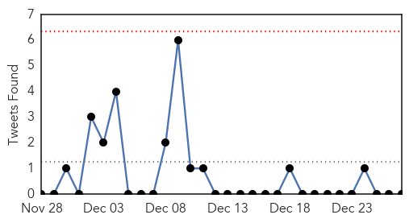
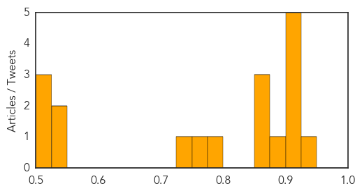
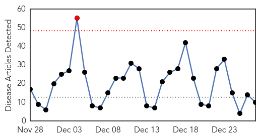

Unknown
30-Day Web Trend
0 alerts, 0 warnings

30-Day Twitter Trend
0 alerts, 0 warnings

Article Locations

Article Confidences
Top Articles:
- 0.933
- Cases of Shigella up among San Francisco homeless
- 0.917
- Chicago Tribune
- 0.917
- Chicago Tribune
- 0.917
- Chicago Tribune
- 0.917
- Chicago Tribune
- 0.917
- Chicago Tribune
- 0.894
- HMC Expert says Good Hygiene is Key to Preventing Spread of Contagious Diseases
- 0.866
- U.S., allies conduct 12 air strikes against Islamic State -Task Force
- 0.865
- Karachi hit by foot-and-mouth disease 954 times this year
- 0.850
- NewsDaily
- 0.788
- Poultry producers brace for bird flu fallout
- 0.767
- Poultry producers worry bird flu will impact trade
- 0.748
- Cold affects life in Tarai
- 0.543
- Vietnam steps up early ARV treatment for HIV patients
- 0.541
- Health D-G shares experience of visiting Kuala Krai during floods
- 0.512
- Fact-finding mission: ‘Bad governance, health issues and lack of education plague Thar’
- 0.512
- Drop in temperature: Respiratory infections on rise
- 0.500
- Nurses turn out to work
Top Tweets:
- 0.610
- Abre XVI Muestra del Arte Misionero: En el marco de la “Semana Fundacional de las Misiones”, se realizará la... http://t.co/dzr91lfRyj
- 0.551
- Maduro retira a Ramírez de cancillería venezolana y lo designa en la ONU: El presidente de Venezuela Nicolás M... http://t.co/12rGquK9Zv
Influenza
30-Day Web Trend
1 alerts, 0 warnings

30-Day Twitter Trend
3 alerts, 0 warnings

Article Locations

Article Confidences

Top Articles:
- 1.000
- Flu season expected to be rough this year
- 0.984
- County and state health officials promote flu shots in Oklahoma
- 0.981
- Libya: 4 H5N1 bird flu deaths reported
- 0.964
- Flu Season in Full Swing in Rhode Island
- 0.946
- 4 die of bird flu in Libya
- 0.942
- Four die of bird flu in Libya: minister – BorneoPost Online
- 0.875
- Woman, 68, in critical condition after being diagnosed with bird flu
- 0.838
- Shizuoka hospital influenza outbreak leaves 2 dead, 101 infected ‹ Japan Today
- 0.757
- Craig health briefs for Dec. 27, 2014: Problems encountered enrolling for health insurance; help available at VNA
- 0.617
- S. Korea confirms additional case of avian influenza
Top Tweets:
- 0.641
- RT: Asia HongKong reports 11th imported H7N9 avian influenza case, Influenza pandemic alert raised birdflu China http://t…